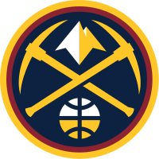

Denver Nuggets

Denver Nuggets so ameriška profesionalna košarkarska ekipa s sedežem v Denverju. Nuggets tekmujejo v Nacionalni košarkarski zvezi (NBA) kot član zahodne konference Severozahodne divizije lige. Ekipa je bila ustanovljena kot Denver Larks leta 1967 kot čarterska franšiza Ameriške košarkarske zveze (ABA), vendar se je pred prvo sezono preimenovala v Rockets. Rockets so nato leta 1974 spet spremenili ime v Nuggets. Po spremembi imena so Nuggets leta 1976 igrali za končni naslov prvaka ABA in izgubili proti New York Nets. Ekipa je imela nekaj obdobij uspeha, kvalificirala se je za končnico ABA v vseh sezonah od leta 1967 do končnice ABA leta 1976, kjer je izgubila v finalu.[16] Ekipa se je pridružila ligi NBA leta 1976 po združitvi ABA-NBA in se kvalificirala za končnico lige NBA v devetih zaporednih sezonah v 1980-ih in desetih zaporednih sezonah od 2004 do 2013. [16] Vendar pa so se v svoj prvi finale lige NBA uvrstili šele leta 2023; kot taka so tudi zadnja od štirih preživelih nekdanjih ekip ABA, ki so dosegle finale lige NBA. Nuggets svoje domače tekme igrajo v Ball Areni, ki si jo delijo s Colorado Avalanche iz Nacionalne hokejske lige (NHL) in Colorado Mammoth iz National Lacrosse League (NLL). Pred sezono 1948–49 National Basketball League (NBL) so bili ustanovljeni prvotni Denver Nuggets. Po tej sezoni se je NBL združila z Ameriško košarkarsko zvezo (BAA), z na novo enotnim krogom, imenovanim Nacionalna košarkarska zveza, ki odraža združitev. Denver Nuggets so sezono 1949–50 igrali kot ena od čarterskih ekip lige NBA, preden so razpadli. Zapisi in statistika te franšize ostajajo ločeni od sodobnih Denver Nuggets.
Trenutna ekipa

V sezoni NBA 2020–21 je bil Jokić razglašen za najkoristnejšega igralca lige NBA, s čimer je postal prvi center po Shaquillu O'Nealu leta 2000 in prvi igralec v zgodovini franšize Nuggets, ki je prejel to nagrado. Naslednja sezona je imela Denver Nuggets še več sreče s poškodbami. Devet tekem v sezoni se je začetni napadalec Michael Porter Jr. pridružil Murrayju na stranskem tiru z operacijo hrbta ob koncu sezone. Kljub poškodbam sta Jokić in začetni napadalec Aaron Gordon Nuggets popeljala do šestega nosilca, pri čemer je prvi postal prvi igralec v zgodovini lige NBA, ki je v eni sezoni zbral 2000 točk, 1000 skokov in 500 podaj. Jokić je drugo leto zapored prejel nagrado Kia MVP – pridružil se je 12 drugim igralcem v zgodovini lige NBA, ki so prejeli to nagrado v preteklih letih, in prvi center, ki mu je to uspelo po Mosesu Malonu leta 1982 in 1983. V prvem krogu končnice so Jokićevi Nuggets izgubili pet tekem proti Golden State Warriors, ki so nato osvojili prvenstvo. V sezoni 2022–2023 so si Nuggets zagotovili prvo mesto v zahodni konferenci s 53 zmagami in 29 porazi, dve tekmi pred Memphis Grizzlies. Nuggets so v prvem krogu končnice 2023 premagali Minnesota Timberwolves s 4–1, nato pa v konferenčnem polfinalu premagali Phoenix Suns s 4–2. Prevlada Nuggetsov v končnici se je nadaljevala v konferenčnem finalu; pod vodstvom izjemne igre Jokića je ekipa v štirih tekmah premagala Los Angeles Lakers in si zagotovila prvi nastop v finalu lige NBA. To je bilo tudi prvič, da so Nuggets premagali Lakerse v seriji končnice (prej so bili proti njim z 0-7), kot tudi prva zmaga v seriji končnice v zgodovini franšize.